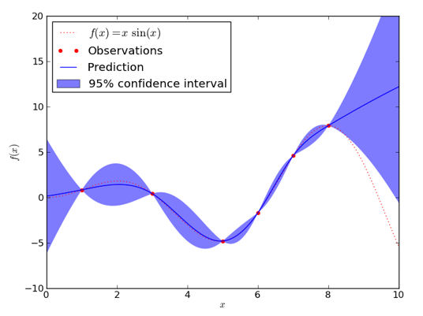
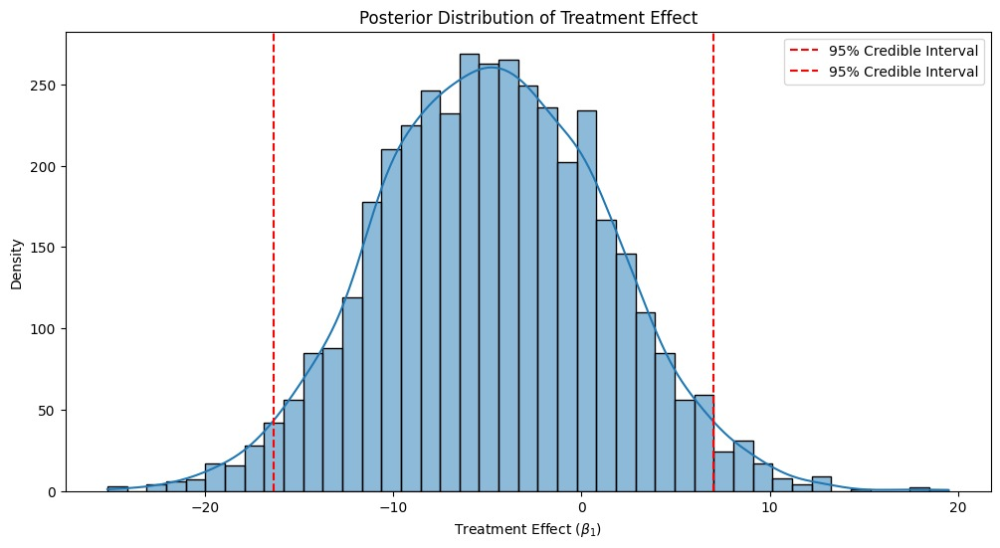
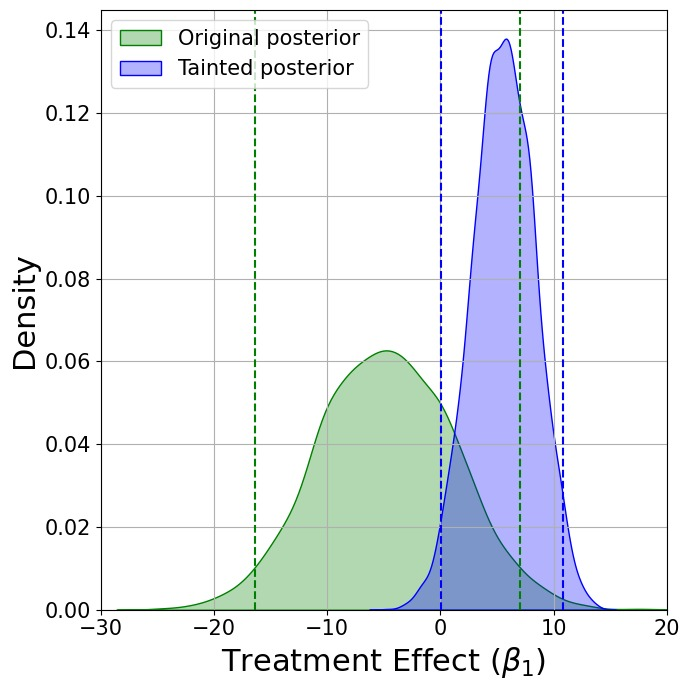
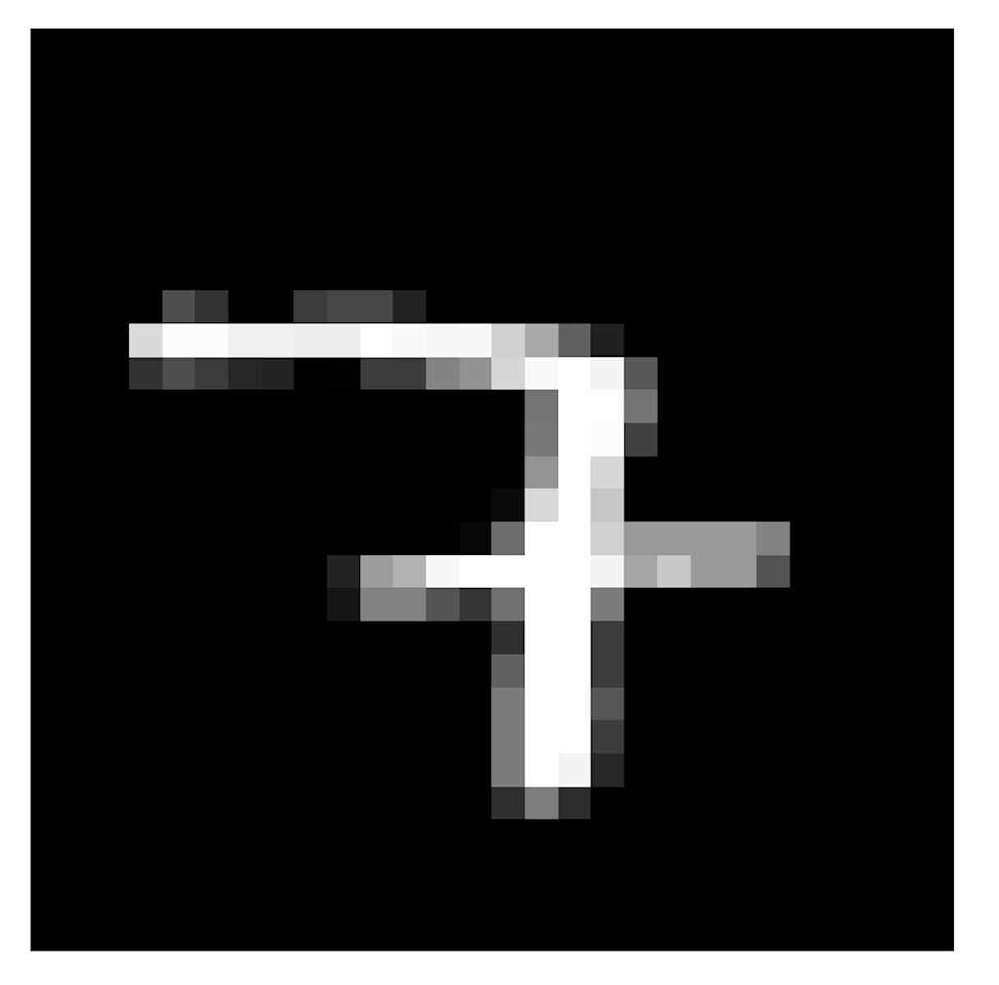
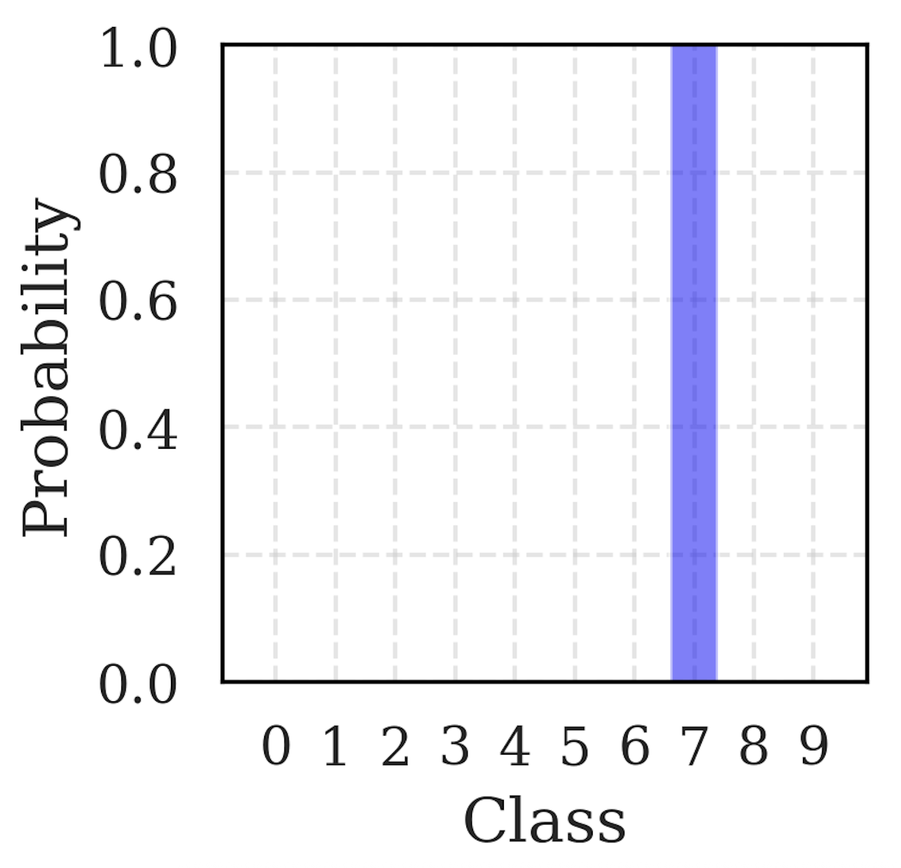
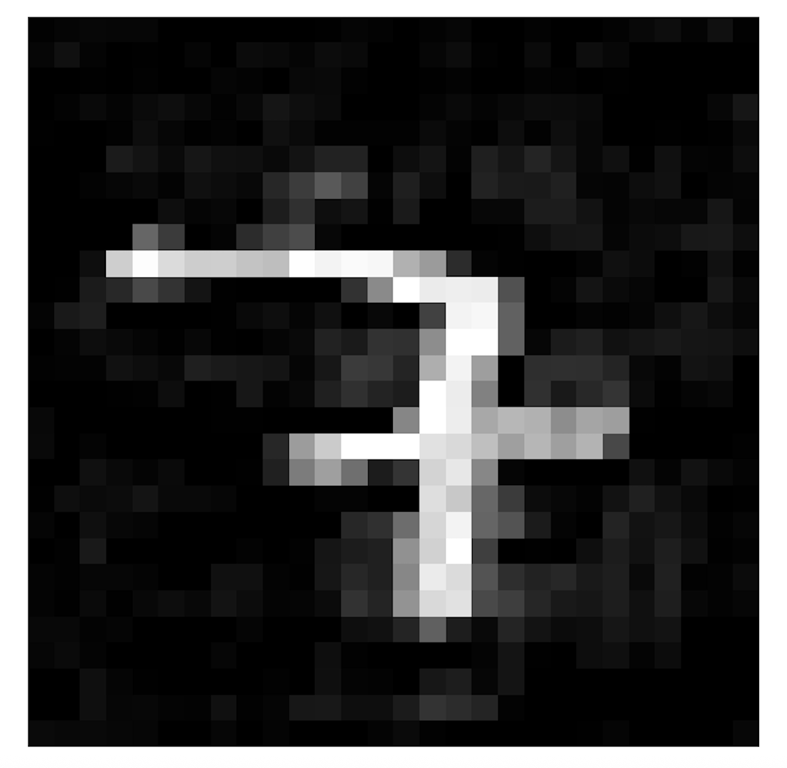
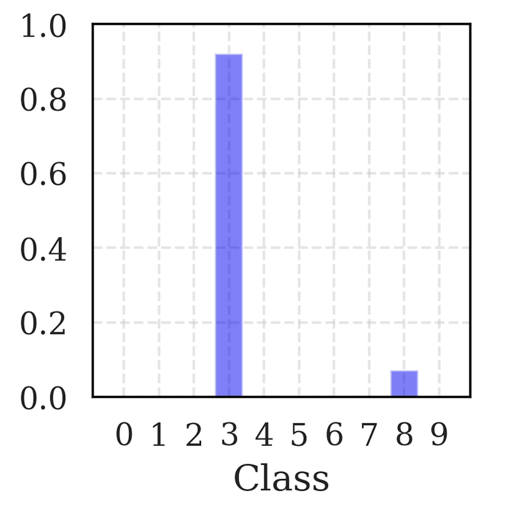
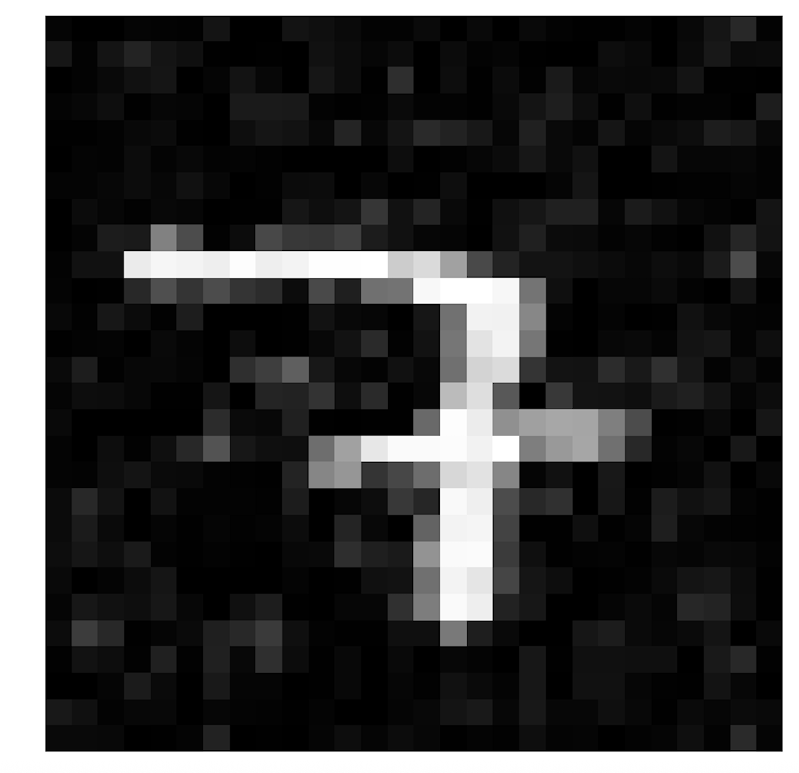
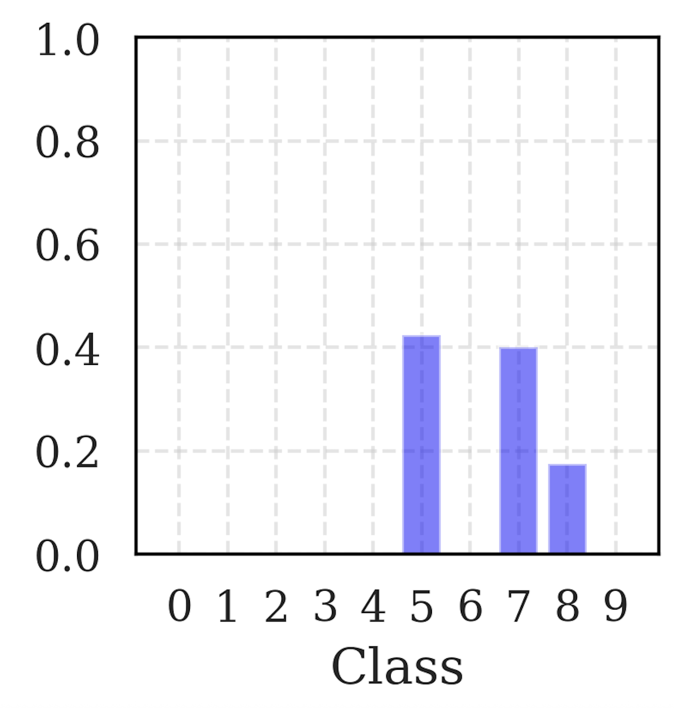

CUNEF University
Doctors compared two minimally invasive treatments for myomas to determine which:
Procedures Compared:
Doctors initially expected RFA to outperform the alternative treatment:
Biased toward RFA!
Statistical analysis revealed no significant differences between RFA and the alternative treatment regarding length of hospital stay.
Data did not support the doctors’ initial preference for RFA!
One doctor asked:
“Can we perform a statistical adjustment to make RFA look better?”
And I replied
“What do you mean by ‘statistical adjustment’?”
Doctor:
“Look, if we remove this patient with an unusually large myoma from the RFA group, the results become significant!”
How can one systematically select a minimal subset of data points to manipulate in order to alter a statistical/ML-based conclusion?
Adversarial Machine Learning (AML), studies
How data manipulations influence ML-based inferences, predictions, and decisions.
How to design robust ML methods that are resistant to such manipulations.
We wil give an overview of AML attacks and defenses in the context of Bayesian Machine Learning.
Honest Bayesian (Defender) observes training data \mathcal{D}_n = \{(X_i, y_i)\}_{i=1}^n.
Model: y_i \mid X_i, \theta \sim p(\cdot \mid X_i, \theta) with prior \theta \sim \pi(\theta).
Goal: update beliefs about the unknown parameter \theta \in \mathbb{R}^d based on observed data.
Posterior = prior x fit to the observed pairs: p(\theta \mid \mathcal{D}_n) \propto \underbrace{p(\theta)}_{\text{prior}} \times \underbrace{\prod_{i=1}^n p(y_i \mid X_i, \theta)}_{\text{likelihood of the observed pairs}}
p(y_{\text{new}} \mid x_{\text{new}}, \mathcal{D}_n) = \int p(y_{\text{new}} \mid x_{\text{new}}, \theta)\,p(\theta \mid \mathcal{D}_n)\,d\theta

A decision means choosing an action a \in \mathcal{A}.
A utility u(a,s) tells us how desirable the consequence is if we take action a and state s happens.
In our setting, s could be an unknown parameter \theta or a future outcome Y_{\text{new}}.
a^* = \arg\max_{a \in \mathcal{A}} \int u(a,s) p(s | \mathcal{D}_n) ds
In Bayesian ML, even small data manipulations can propagate through the pipeline and ultimately alter the decision induced by the model.
An attack may target posterior inference, posterior prediction, or directly the final decision rule.
In the rest of the talk, I focus on attacks on inference and prediction.
Randomized controlled trial on microcredit (16,560 businesses) conducted in Mexico City (Angelucci et al., 2015).
Treatment assignment: x_i = \begin{cases} 1 & \text{microcredit} \\ 0 & \text{control} \end{cases}
Objective: Assess impact on business profit y_i.
Model used, parameters are \theta = \lbrace \beta_0, \beta_1, \sigma \rbrace: p(y_i \mid X_i, \theta) = \mathcal{N}(\beta_0 + \beta_1 x_i, \sigma^2)
Priors: p(\theta) \beta_0,\,\beta_1,\, \log(\sigma) \sim t(3,\,0,\,1000)
Parameter \beta_1 represents the Average Treatment Effect (ATE).
It is the average change in profit caused by offering microcredit, so its sign and magnitude determine whether expanding the program looks beneficial or harmful.
We observe data \mathcal{D}_n = \{(X_i, y_i)\}_{i=1}^n.
n = 16,560
We approximate posterior p(\beta_0, \beta_1, \sigma | \mathcal{D}_n).

Then expected utility for expanding is: \mathbb{E}[u(\text{expand}, \beta_1) \mid \mathcal{D}_n] = \mathbb{E}[\beta_1 \mid \mathcal{D}_n] - c = -4.71 - c,
For not expanding: \mathbb{E}[u(\text{do not expand}, \beta_1) \mid \mathcal{D}_n] = 0
Since c > 0, we have -4.71 - c < 0, so the Bayes action is: do not expand microcredit.
Attacker manipulates data by deleting or replicating points.
Represented by integer vector w \in \mathbb{Z}_{\geq 0}^n:
Resulting posterior: \pi_w(\theta \mid \mathcal{D}_n) = \frac{1}{Z(w)} \left(\prod_{i=1}^n p(y_i \mid X_i, \theta)^{w_i}\right)\pi(\theta)
Goal: alter statistical conclusions by manipulating just a few data points.
Just removing a strategically chosen 0.12 \% (B=20) of the data points…

Goal: Find minimal data manipulations w \in \mathbb{Z}_{\geq 0}^n such that the resulting posterior \pi_w(\theta \mid \mathcal{D}_n) is as close as possible to a target distribution \pi_A(\theta).
Minimize forward KL divergence: \min_w \quad \text{KL}(\pi_A(\theta) \parallel \pi_w(\theta \mid \mathcal{D}_n))
Subject to constraints: w \in \mathbb{Z}_{\geq 0}^n, \quad \|w - \mathbf{1}\|_1 \leq B, \quad \|w\|_\infty \leq L
Imagine a BNN trained on MNIST to classify digits.
Data: \mathcal{D}_n = \{(x_i, y_i)\}_{i=1}^n, where x_i is an image and y_i \in \{0,\dots,9\} is its label.
Representation (model and prior): put a prior on the network weights W, and let the network define p(y \mid x, W).
Prediction: average the network outputs over posterior draws of the weights p(y_{\text{new}} \mid x_{\text{new}}, \mathcal{D}_n)= \\ \int p(y_{\text{new}} \mid x_{\text{new}}, W)\,p(W \mid \mathcal{D}_n)\,dW.
Infinite ensemble of networks, each weighted by how well it explains the training data.


Start from a clean image x and its BNN predictive distribution p(y \mid x,\mathcal{D}_n).
Unlike before, the attacker perturbs the test image itself, while leaving the training data untouched.
The attacker can only make a small change to the pixels: \mathcal{X}(x)=\{x' : \|x'-x\|\leq \epsilon\}.
Concrete example: the clean image is a 7, but the attacker wants the BNN to believe it is a 3. Make p(Y=3 \mid x',\mathcal{D}_n) as large as possible.
x^*_{\text{adv}} = \arg\max_{x' \in \mathcal{X}(x)} p(Y=3 \mid x',\mathcal{D}_n)
Approximate the predictive probability with posterior samples W^{(1)},\dots,W^{(M)}: p(Y=3 \mid x',\mathcal{D}_n) \approx \frac{1}{M}\sum_{m=1}^M p(Y=3 \mid x', W^{(m)}).
We estimate \nabla_{x'} p(Y=3 \mid x',\mathcal{D}_n) by backpropagating through the network.
Then we update x' with projected gradient ascent steps, projecting back onto \mathcal{X}(x) after each step.


The attacker can also target the BNN’s uncertainty estimates.
Make them overconfident in wrong predictions, or underconfident in correct ones.


It seems that NNs (on clean data) learn superficial patterns that are not robust to small perturbations
i.e. they are not learning the true underlying concepts, but rather some shortcuts that work well on clean data but fail under adversarial conditions.
This is very serious for safety-critical applications like autonomous driving, medical diagnosis, etc.
In practice, we do not know which attack will be used, how strong it will be, or how often it will appear.
Bayesian view: model all the known unknowns.
Not only model the data y | x, \theta, also model the attacker through a probabilistic adversarial channel p(x' \mid x,\theta), which represents a distribution over plausible perturbations.
Then purification and training can average over likely attacks, instead of assuming one fixed perturbation.
Caveat, modelling humans, is hard (performative effects, infinite regressions, etc.)
Game Theory, Adversarial Risk Analysis.
Small, plausible perturbations can change Bayesian posteriors, predictions, and therefore decisions.
This is especially serious in safety-critical settings.
So defenses should model the attacker probabilistically and train against a distribution of attacks.
Arms race!
Questions are welcome!
📧 roi.naveiro@cunef.edu
🌐 https://github.com/roinaveiro